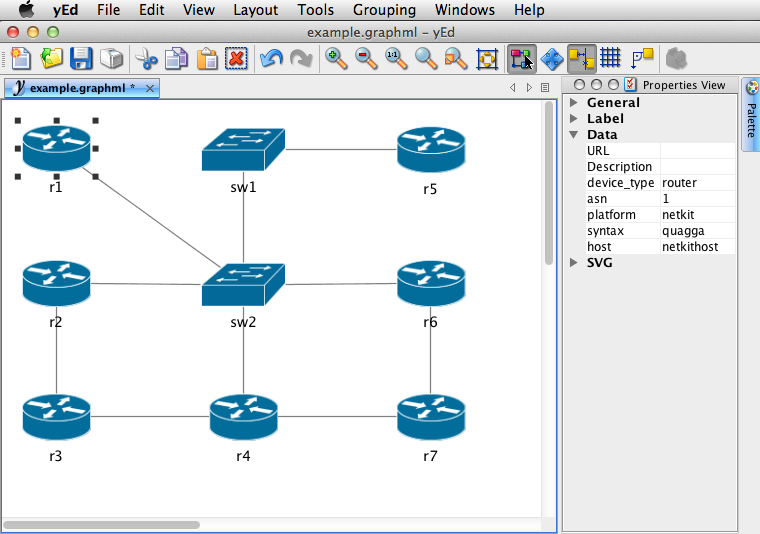
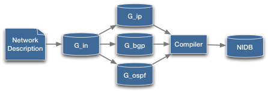

Simplify Network Management.
Build your network from a diagram. Easily configure protocols. Automatically allocate IP addresses. Get live visual feedback. Generate configuration files from templates. Deploy to emulated networks. Measure the results.
A number of the features described here refer to the upcoming release of AutoNetkit, which will be available shortly. Subscribe to our Twitter feed for updates.
Install from Python Package Index.
Follow on Twitter.
Discuss on Google Groups.
Fork on Github.

Draw your network in a visual editor such as yEd. Add attributes such as device type, ASN, link speeds, or OSPF costs.
Build networks from these attributes. Protocols such as BGP and OSPF can be designed at a high level, using attributes such as device type and ASN. Work with native Python syntax.
View the results of network designs in real time, using browser-based visualizations powered by d3.
Generate configurations from abstract network model using plain-text templates: no complex XML transforms to learn and debug.
AutoNetkit includes scripts to push generated configurations to emulation platforms such as Netkit, Dynagen, and Junosphere.
AutoNetkit is available on Github under a BSD licence, and builds on Python projects including NetworkX, Mako, Exscript and TextFSM.
Visual Capture
Draw your network in a visual tool such as yEd. AutoNetkit supports the GraphML input format.
Built on Abstract Model
AutoNetkit builds on our research work into abstract network representations, providing a formal and flexible approach to network design.
Designing Network Services
for asn, devices in G_phy.groupby("asn").items():
routers = [d for d in devices if d.is_router]
ibgp_edges = [ (s, t) for s in routers for t in routers if s!=t]
G_bgp.add_edges_from(ibgp_edges, type = 'ibgp')
G_bgp = anm.add_overlay("bgp", directed = True)
G_bgp.add_nodes_from(G_in.nodes("is_router"))
ebgp_edges = [edge for edge in G_in.edges() if edge.src.asn != edge.dst.asn]
G_bgp.add_edges_from(ebgp_edges, bidirectional = True, type = 'ebgp')
Design your network using Python syntax.
OSPF Template
hostname ${node}
password ${node.zebra.password}
banner motd file /etc/quagga/motd.txt
!
% for interface in node.interfaces:
interface ${interface.id}
#Link ${interface.description}
ip ospf cost ${interface.ospf_cost}
!
%endfor
!
% if node.ospf:
router ospf
% for ospf_link in node.ospf.ospf_links:
network ${ospf_link.network.cidr} area ${ospf_link.area}
% endfor
% endif
!
Template output
hostname 1a.1 password 1234 banner motd file /etc/quagga/motd.txt ! interface eth0 #Link to 1a.1 to 1b.1 ip ospf cost 1 ! interface eth1 #Link to 1a.1 to 1c.1 ip ospf cost 1 ! ! router ospf network 10.0.0.0/30 area 0 network 10.0.0.4/30 area 0 !
Directory Structure
quagga/
└── etc
├── hostname
├── hostname.mako
├── ssh
│ └── sshd_config
└── zebra
├── bgp.conf.mako
├── motd.txt.mako
├── ospf.conf.mako
├── zebra.conf.mako
└── zebra_daemons.conf.mako
Rendered Directory Output
├── 1a.1 │ └── etc │ ├── hostname │ ├── ssh │ │ └── sshd_config │ └── zebra │ ├── bgp.conf │ ├── motd.txt │ ├── ospf.conf │ ├── zebra.conf │ └── zebra_daemons.conf ├── 1a_1.startup
Create templates using Mako templating. Directory structures are also supported, ideal for configuring Unix services such as Bind or Apache.
Deployment
Automated deployment using Exscript.
Resource Allocation

Automatically allocate network resources such as IP addresses.
Visual Feedback

Real-time feedback of network designs using the D3 visualization library, requiring only a web browser.
Topology Zoo Integration
AutoNetkit works with network topologies from our Internet Topology Zoo Project. Simply download a network in GraphML format and run AutoNetkit.

$ autonetkit -f Geant2012.graphml
Publications
- How to Build Complex, Large-Scale Emulated Networks Hung Nguyen, Matthew Roughan, Simon Knight, Nick Falkner, Olaf Maennel, Randy Bush The 6th International Conference on Testbeds and Research Infrastructures for the Development of Networks and Communities, Berlin, Germany, May 2010;
- Simon Knight, Matthew Roughan, Askar Jaboldinov, Olaf Maennel, Iain Phillips, AutoNetkit: Simplifying Large Scale, Open-Source Network Experimentation, Poster Abstract and Poster, 2012 ACM SIGCOMM Conference, Helsinki, Finland (To Appear).
Installation
AutoNetkit requires either Python 2.6 or Python 2.7
AutoNetkit is available on the Python Package Index. You can install it using either the easy_install
easy_install AutoNetkit
or pip Python package management tools
pip install AutoNetkit
Mac OS X
Note: depending on your system, you may need to use sudo with pip or easy_install.
sudo easy_install AutoNetkit
or
sudo pip install AutoNetkit
Linux
First install Python, and easy_install or pip using your package manager:
sknight@trc1:~$ sudo apt-get install python-pip
sknight@trc1:~$ pip install AutoNetkit
Windows
- Download Python for Windows from:
http://www.python.org/ftp/python/2.7.2/python-2.7.2.msi
Install the package -
Download easy_install for Windows:
http://pypi.python.org/packages/2.7/s/setuptools/setuptools-0.6c11.win32-py2.7.exe#md5=57e1e64f6b7c7f1d2eddfc9746bbaf20
Install the package - Start a command window (run cmd.exe) and cd to directory to which Python was installed (defaults to C:\Python27)
- cd into the Scripts directory.
-
Install the PIP package management tool by typing:
easy_install pip
-
Once complete, install AutoNetkit as follows:
pip.exe install AutoNetkit
AutoNetkit is now installed in the ‘scripts’ directory
Open-Source
AutoNetkit is available under a BSD Licence.
API Documentation
API documentation is available on the Python Package Index page: API Documentation
Contact
AutoNetkit is on Google Groups. Please use this group for feedback and suggestions.
Contributors

The following people have contributed to AutoNetkit:
- Simon Knight
- Hung Nguyen
- Nickolas Falkner
- Olaf Maennel
- Iain Phillips
- Askar Jaboldinov
- Matthew Roughan
- Hitesh Mali
- Ingmar Poese
- Joel Obstfeld
- Michael Rumsewicz
- Randy Bush
- Stephen Steiner